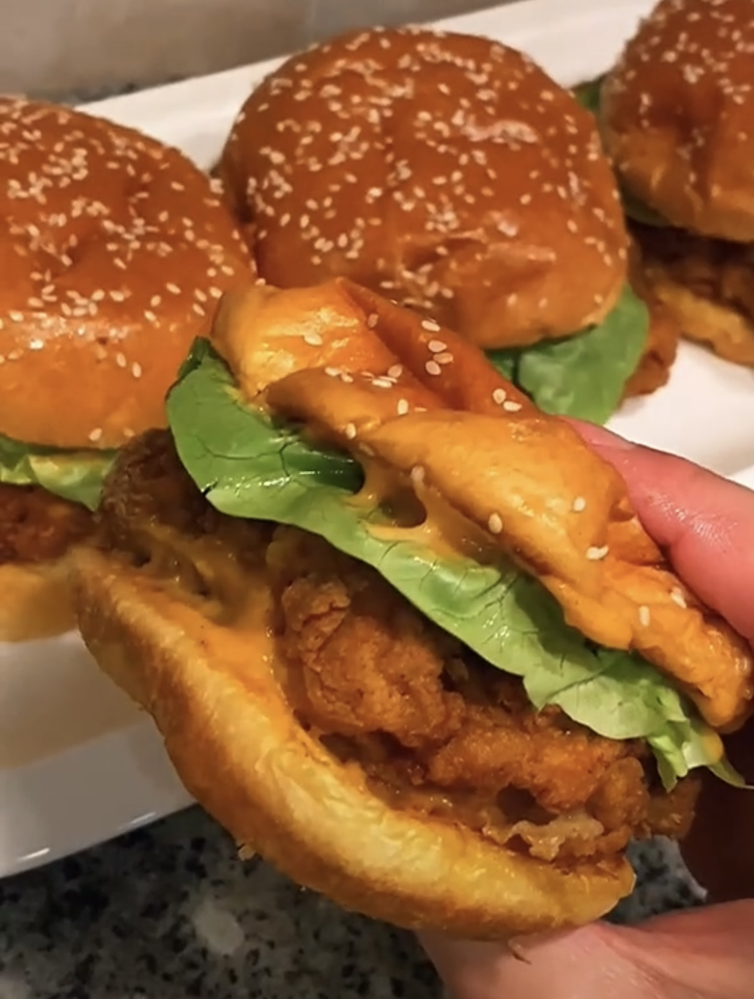

Dami's Chicken Burgers

Description
A simple chicken burger recipe stolen from someone else
Ingredients
- 1 cup of buttermilk
- 1 egg
- chicken breasts
- 1 cup of flower
- 1/4 cup of cornstarch
- salt
- garlic powder
- black pepper
- paprika
- chilli powder
- oregano
- cajun
- mayo
- siracha
Steps
-
For the marinade, combine 1 cup of buttermilk and
an egg. Add a 1/2 tsp of salt, black pepper and chilli
powder and then 1 tsp of paprika and garlic powder.
- Place the chicken into the marinade and leave for 2 hours.
-
For the flour mix, combine 1 cup of flower,
1/4 cup of cornstarch 1tsp of salt, 1tbsp of garlic powder,
1tsp of chilli powder, 1 tbsp of paprika, 1 tsp of oregano,
1tsp of cajun and 1 tsp of black pepper.
-
[OPTIONAL] For the spicy mayo, combine 3/4 cup of mayo, a
tbsp of siracha, 1/2 tsp of garlic powder, 1 tsp of chilli
powder, 1/2 tsp of black pepper and some salt.
-
Take the chicken breast out of the marinade and coat in the
flower mix. This can be double dipped for a crispier coat.
-
Leave the chicken to rest for 5-10 minutes.
-
Fry at 175C for 5-10 minutes and then plate!